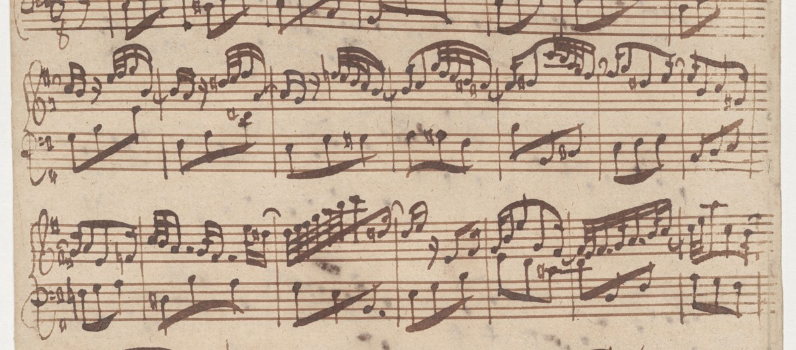

Nove posizioni finiscono presto. Si aggiungono righe, e poi un rigo intero — e in mezzo c’è una nota che sta in tutti e due.
Il doppio pentagramma è formato da due pentagrammi uniti tra loro da una parentesi graffa e da una linea verticale che li congiunge.
Andrea Cappellari, Teoria, Analisi e Percezione Musicale, vol. 1, p. 11
Cinque linee, quattro spazi
numerati dal basso verso l’alto
Nove posizioni
una nota sta o su una linea o in uno spazio
La chiave
fissa una nota, e con quella tutte le altre
E adesso il problema: nove posizioni finiscono subito. Una voce ne usa il doppio, un pianoforte anche cinque volte tanto. Che si fa quando la musica esce dal rigo?
C1Leggiamo sul doppio pentagramma, p. 218, sezione C
Oggi ne usiamo la seconda metà: quella con i due righi e il do in mezzo.
Un taglio addizionale è un pezzetto di linea, lungo quanto la nota, messo sopra o sotto il pentagramma. Non attraversa tutta la pagina: esiste solo per quella nota.
La prima battuta scende sotto la prima linea, la seconda sale sopra la quinta. Le note non cambiano natura: la scala prosegue, e la riga si aggiunge per accompagnarla.
In teoria si potrebbe continuare all’infinito. In pratica no, e il motivo è lo stesso delle cinque righe: l’occhio non conta.
Uno o due tagli
si leggono a colpo d’occhio, come le righe del rigo
Cinque o sei tagli
bisogna contarli uno per uno, e mentre si conta la musica è già andata avanti
Per la musica che sta poco fuori, i tagli bastano. Per uno strumento che copre tutta l’estensione — il pianoforte, l’organo — serve altro.
Si prende un secondo pentagramma, gli si mette la chiave di basso, e lo si unisce al primo con una graffa e una linea verticale. I due righi si leggono insieme: sono un unico sistema, non due musiche.
Sistema: i righi che si leggono nello stesso momento. Al pianoforte due, in un quartetto quattro, in orchestra anche venti.
Questa è una pagina autografa del 1725. Guardate il margine sinistro: la graffa tiene insieme due righi, e all’inizio di ciascuno c’è la sua chiave — violino sopra, basso sotto.

Fra i due righi c’è un buco: l’ultima nota comoda in basso al rigo di violino e la prima comoda in alto al rigo di basso. In quel buco c’è una nota sola, e si chiama do centrale.
In chiave di violino sta sul primo taglio sotto il rigo.
In chiave di basso sta sul primo taglio sopra il rigo.
Ascoltateli tutti e due. È lo stesso suono: due scritture, una nota.
Finché non si vede il do centrale, la chiave di basso sembra un secondo alfabeto da imparare da capo. Dopo, è la stessa fila di note, guardata più in basso.
I due righi insieme coprono tre ottave abbondanti senza quasi un taglio. È per questo che il pianoforte si scrive così: non per tradizione, ma perché funziona.
Con i tagli, i due righi si sovrappongono per qualche nota: le stesse altezze si possono scrivere sopra o sotto, e si sceglie quella che si legge meglio.
Il la sotto il rigo di violino…
…è il la nel rigo di basso.
Chi scrive sceglie: la nota si mette dove costa meno tagli. Non è una regola, è buon senso tipografico.
È la difficoltà vera, e non è la somma di due letture: chi legge bene il violino e bene il basso può perdersi lo stesso quando i due righi vanno insieme, perché l’occhio deve saltare.
Guardiamo il sistema alla lavagna. Prima leggiamo solo il rigo di sopra, poi solo quello di sotto. Poi la terza volta: una battuta alla volta, tutti e due i righi, dicendo prima la nota grave e poi l’acuta.
Non si va veloci. Chi va veloce sta leggendo un rigo solo.
Cinque affermazioni sui tagli, sul sistema e sul do centrale.
Taglio addizionale — una riga corta, sopra o sotto il rigo, per una nota sola.
Sistema — i righi che si leggono nello stesso momento, uniti dalla graffa.
Do centrale — la nota fra i due righi: primo taglio sotto in chiave di violino, primo taglio sopra in chiave di basso.
Le due chiavi non sono due alfabeti. Sono due finestre sulla stessa scala, e il do centrale è il punto in cui si toccano.
La prossima ora si legge ad alta voce quello che oggi abbiamo imparato a guardare: solfeggio parlato sul rigo.
Compiti
1. Il do centrale, riconosciuto. Sul Workbook trovi sei coppie di suoni. Per ciascuna scrivi sì o no: i due suoni sono la stessa nota?
Compiti
2. Lo stesso do, due volte. Sul quaderno, disegna un sistema di due righi con la graffa. Scrivi il do centrale nel rigo di violino, e subito dopo lo stesso do nel rigo di basso.
Si scrive sul tuo quaderno, e la foto va su Classroom; lo ritrovi nel Workbook, scheda C1-U2-L2-02.
3. Sopra e sotto: sei note coi tagli. Sul quaderno, in chiave di violino, scrivi queste sei note: do, si, la sotto il rigo e sol, la, si sopra il rigo.
Si scrive sul tuo quaderno, e la foto va su Classroom; lo ritrovi nel Workbook, scheda C1-U2-L2-03.